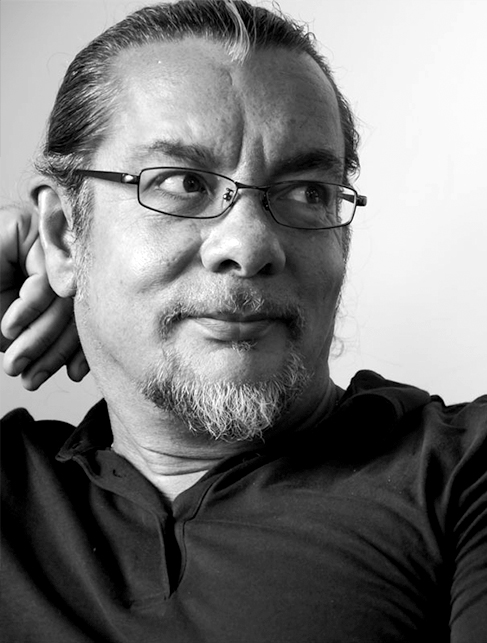

네빌 브로디 (Neville Brody)
1957년 4월 23일, 영국 런던 사우스게이트
그래픽 디자이너, 타이포 그래퍼, 아트 디렉터
Brody Associates
Fontshop International Inc
Royal Designers for Industry
잡지 <페이스> 미술감독
타이포그래피 계간지 <퓨즈> 창간
잡지 아레나 미술감독
리서치스튜디오(Research Studios) 설립
영국 왕립예술대학(RCA) 커뮤니케이션
아트디자인학과 학과장으로 선출